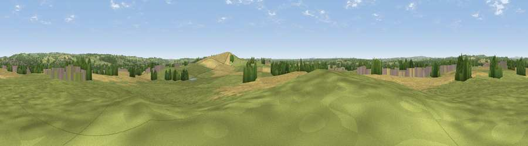

Pire Hill
#28155 in England · top 44% of its area beats it · near Aston-by-StoneThe view, rendered

A 360° render of this exact spot computed from the terrain model, tree cover and land cover — summer colours, afternoon light, calibrated against photographs of famous viewpoints. Real trees, hedges and buildings will differ in detail.
The panorama
Grey silhouette: terrain skyline in each direction (720 bearings, Earth curvature and refraction included). Dashed green: skyline with trees (+15 m) and buildings (+8 m) as obstacles. Blue strip: how far the ground is visible on each bearing.
Where the view opens
Wedge length = distance to the farthest visible ground on that bearing (vegetation-aware). Rings at 10, 25 and 50 km.
What fills the view
60% grassland · 25% cropland · 10% woodland · 5% built-up
Angular shares of the visible panorama (visual magnitude), not map area. Landscape diversity 0.45 (0–1 Shannon).
Key numbers
More beautiful places nearby
The staircase of upgrades: each row has a higher view potential than everything closer. Driving times are estimates from straight-line distance, calibrated against real road routing — check an actual route before setting out.
| Place | Direction | Drive | Score |
|---|---|---|---|
| Peasley Bank | SSE · 1 km | ~4 min | 57.2 |
| Viewpoint near Swynnerton | NW · 6 km | ~14 min | 59.4 |
| Viewpoint near Beech | NNW · 9 km | ~17 min | 62.1 |
| Viewpoint near Beech | NNW · 9 km | ~18 min | 63.7 |
| Viewpoint near Madeley | NW · 19 km | ~32 min | 66.7 |
| Bignall Hill | NNW · 21 km | ~36 min | 75.2 |
| Viewpoint near Mow Cop | N · 26 km | ~42 min | 80.2 |
| Viewpoint near Little Wenlock | SW · 35 km | ~53 min | 84.2 |
52.87842, -2.15799 · source: osm peak · position refined by local search. Computed location — check access rights before visiting.